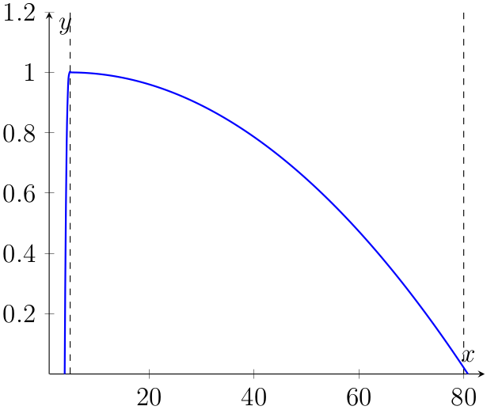
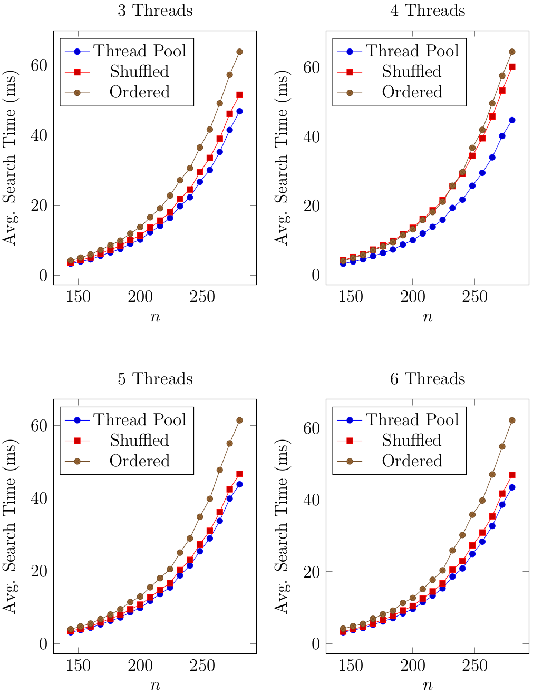

CombinoChord: A Guitar Chord Generator App
Tue, 05 Apr 2016
Android, Computer Science, Guitar, Mathematics, Music
This post is concerned with an approach to generating guitar chords fingerings given run-time parameters regarding the guitar configuration and player's hand. The approach is expected to run acceptably on an Android mobile device and should be responsive to user input and should assign conventional fingerings high heuristic scores. The core source code that is described in this post is available at
the following git repository. The app is available for download on
the Google play store.
Problem Significance
The non-trivial nature of this problem stems from the way in which guitars are constructed. A brute force approach is unsatisfactory because there are a large number of possible candidates the vast majority of which are anatomically impossible or produce incorrect notes. Consider enumerating every possible way in which a player could place his or her fingers (excluding the thumb). Due to the fact that each finger may optionally form a barre, the number of candidates to consider is:
\[\displaylines{\sum\limits_{i=0}^{4}{[2^{i} \times \prod\limits_{j=0}^{i-1}{(n-j)}]}=16 n^4-88 n^3+156 n^2-82 n+1 }\ ,\]
where \(n=s \times f\) is the number of fret positions, \(s\) is the number of strings, and \(f\) is the number of frets on the guitar. There are roughly \(3.17 \times 10^{9}\) candidates on a guitar with 6 strings and 20 frets and \(2.5 \times 10^{10}\) on one with 8 strings and 25 frets.
Related Research
Norman and Grozman (2013) implemented a method for finding fingerings for a guitar melody. The method represents the melody as a layered graph with each layer corresponding to a note. In this method, a fingering for the melody corresponds to a path through the graph from left to right, with the ease or difficulty of producing the fingering the total weights of the path. Various considerations for determining an appropriate cost function are discussed that were taken from an interview with a professional guitarist. The optimal fingering is determined by exhaustive search which can become intractable for longer melodies.
Tuohy and Potter (2005) applied a genetic algorithm to the problem of determining finger numbers in guitar tablature that does not have them. A population of candidate fingerings is locally optimized by combining traits of the most fit members over time using a technique called crossover. Fitness is determined by a heuristic function which considers the amount of movement over the fret board needed to play a certain fingering and rewards barre chords with higher fitness values.
Relevant Android application were surveyed and it was concluded that existing solutions rely upon a static database of chords that is hard-coded into the application. This approach cannot adapt to the user's preferences or exotic guitar configurations. Generating chords at run-time avoids these above-stated drawbacks while also avoiding the upfront work of creating the database.
Notation
Let \(\mathbb{X} = \{C, C\#/D\flat, D, \ldots, B\}\) be the set of 12 musical notes in western music. The set of all notes along with their octave can be be represented as \(\mathbb{X} \times \mathbb{Z}\). Define a mapping \(F:\mathbb{X} \mapsto \mathbb{Z} / 12\mathbb{Z}\) as: \(F: \{(C, 0),\ldots, (B, 11)\}\). Next, define a mapping \(H:\mathbb{X} \times \mathbb{Z} \mapsto \mathbb{Z}\) from western music notation to a unique integer as \(H(n,m)=12m+F(n)\), where \(n\) is the note name and \(m\) is the octave number. For example, A4 would be \(H(A,4)=12 \times 4 + F(A) = 48 + 9 = 57\). The unique integer produced by \(H\) will be referred to as the "semitone number".
A guitar
tuning is then a multiset of semitone numbers. For instance, standard tuning can be represented as: \(Standard = \{40, 45, 50, 55, 59, 64\}\). Neglecting octaves, a
chord can be defined as a subset of \(\mathbb{Z} / 12\mathbb{Z}\). A
fingering \(\Phi=\{\phi_{1}, \phi_{2}, \ldots, \phi_{s}\}\) is a set of
fret positions where each fret position is a \(5\)-tuple \(\phi = (p, s, f, n, F)\), where \(p \in \mathbb{R}^{2}\) represents the location of the fret position in euclidean space, \(s\) is the string number, \(f\) is the fret number, \(n\) is the semitone number of the note produced, and \(F \in \{NONE, 1, 2, 3, 4\}\) is the finger used to depress the fret position (if any).
Heuristic Function
A heuristic function \(\mathfrak{f}: Y \mapsto [0, 1]\), where \(Y\) is the set of all possible fingerings, is constructed that aims to evaluate the "goodness" of a guitar chord fingering. This function will assign higher scores to chord fingerings that are easier to play and sound fuller. The final heuristic score, \(f(\Phi)\), is the weighted average of an anatomical score and three sound quality scores. In order to evaluate the ease or difficulty of producing a fingering a model of the guitar fretboard and human hand are constructed discussed next.
According to the definition of an equal-temperament semitone and Mersenne's Law by Mersenne (1636), the width of the \(n\) fret on a guitar is: \(g(n)=\gamma/2^{(n-1)/12}\), where \(\gamma\) is the width of the first fret. The horizontal distance \(\mathfrak{D}(m,n)\) between the \(m\)-th fret and the \(n\)-th fret where \(m \leq n\) is then as follows:
\[\displaylines{\mathfrak{D}(m,n)=\sum\limits_{i=m+1}^{n-1}{g(i)} }\]
\[\displaylines{=\sum\limits_{i=m+1}^{n-1}{\frac{\gamma}{2^{(i-1)/12}}}=\frac{2 \gamma}{-2+2^{11/12}}(2^{(1-n)/12}-2^{-m/12}). }\]
Using the width and spacing of the strings at the nut and bridge, the vertical distance between the strings can also be derived. A grid of points representing the centers of the fret positions can then be computed using a simple linear function. Finally, the distance between two fret positions \(\phi_{i}=(p_{i}, s_{i}, f_{i}, n_{i}, F_{i})\) and \(\phi_{j}=(p_{j}, s_{j}, f_{j}, n_{j}, F_{j})\) can be computed as \(\lVert p_{i} - p_{j} \rVert\).
| Finger 1 |
Finger 2 |
Min Range |
Max Range |
| 1 |
2 |
5.0 |
80.0 |
| 1 |
3 |
15.0 |
95.0 |
| 1 |
4 |
25.0 |
110.0 |
| 2 |
3 |
6.0 |
52.0 |
| 2 |
4 |
12.0 |
69.0 |
| 3 |
4 |
8.5 |
47.0 |
Table 1: Hand Model Table
Next a model of the player's hand is constructed. A table of comfortable minimum and maximum ranges for pairs of fingers, stored internally as symmetric matrices \(A\) and \(B\), is maintained. Thus, the minimum and maximum comfortable ranges between the \(i\)-th and \(j\)-th finger, are the values \(A_{ij} = A_{ji}\) and \(B_{ij} = B_{ji}\) respectively. An example of such a table is shown in Table 1. The score for a pair of fingers is then computed using the function:
\[\displaylines{SF(x, a, b) = \begin{cases}
1 + (x - 0.99a)^{3} & x < a \\
1 - ((x - 0.99a)/(1.01b - 0.99a))^{2} & x \geq a \\
\end{cases}
}\ ,\]
where \(a\) and \(b\) are the min and max range values for the pair of fingers respectively. A plot of this function is shown in Figure 1. This function was determined empirically.

Figure 1: Plot of SF
To evaluate the ease of producing a fingering, all fret positions depressed by a finger are first identified. Let \(fp=\{\phi_{1}=(p_{1}, s_{1}, f_{1}, n_{1}, F_{1}), \ldots, \phi_{m}=(p_{m}, s_{m}, f_{m}, n_{m}, F_{m})\}\) be the set of fret positions depressed by each of the \(m \leq 4\) fingers in a fingering. The anatomical score is then:
\[\displaylines{FScore(fp)=\frac{1}{\max{(m^{2}-m, 1)}} \sum\limits_{i=1}^{m}{\sum\limits_{j=i+1}^{m}{SF(\lVert p_{i} - p_{j} \rVert, A_{F_{i}F_{j}}, B_{F_{i} F_{j}})}} }\ .\]
To evaluate the sound quality of the chord fingering, three metrics are used: the number of unison notes, the number of mutes, and the number of strings played. A mute is considered to be any non-sounding string that is in the range of strings strummed or plucked in the chord. The score for the number of unison notes is: \(UnisonScore(n)=\frac{1}{n+1}\), where \(n\) is the number of unison notes produced by the fingering. Next, the score for the number of muted string is computed as: \(MuteScore(n)=\frac{1}{(n+1)^{2}}\), where \(n\) is the number of muted string produced by the fingering. Finally, the number of strings played is: \(NumStringScore(n)=\frac{s-n}{n}\), where \(s\) is the number of strings on the guitar, and \(n\) is the lowest string that is sounded.
Searching
The brute force approach outlined earlier inefficiently considered all fret positions on the guitar. For a given a chord \(C \subseteq \mathbb{Z} / 12\mathbb{Z}\), a fret position \(\phi_{i}=(p_{i}, s_{i}, f_{i}, n_{i}, F_{i})\) needs to be considered iff \(n_{i} \pmod{12} \in C\). Earlier it was shown that there are \(3.17 \times 10^{9}\) candidates to consider on a guitar with 6 strings and 20 frets. With pre-processing, the number of candidates for a C Major7 chord on this same guitar is now:
\[\displaylines{\sum\limits_{i=0}^{4}{[2^{i} \times \prod\limits_{j=0}^{i-1}{(46-j)}]} \approx 6.34 \times 10^{7} }\ .\]
Additionally, all permutations of the four finger do not need to be considered as most permutations will result in fingers crossing. Finger numbers can be assigned by sorting the selected fret position first by fret number and then by string. After sorting the only permutations which don't result in cross fingerings are those that are in ascending sorted order. Since there are a fixed number of these, all possibilities are considered and the one with the highest score is selected.
Search(fretpos):
lst = {}
for i in fretpos:
f1 = Filter(fretpos, i)
for j in filtered1:
filtered2 = Filter(f1, j)
for k in f2:
f3 = Filter(f2, k)
for l in f3:
cand = Make(i, j, k, l)
if(cand.isValid())
lst.append(cand)
return lst
Figure 2: Search with Filtering
As the search progresses, fret positions are filtered based on several criteria as seen in Figure 2. First, if a string \(j\) has been depressed, then a fret position \(\phi_{i}=(p_{i}, s_{i}, f_{i}, n_{i}, F_{i})\) where \(j = s_{i}\) no longer needs to be considered in subsequent steps. For if a finger is placed on such a fret position, at least one finger will be of no effect and thus would have already been considered. Second, fret positions beyond the maximum distance the player can stretch can be filtered. Thus, if a fret position \(\phi_{i}=(p_{i}, s_{i}, f_{i}, n_{i}, F_{i})\) has already been selected and \(f_{i} \neq 0\), any other fret position \(\phi_{j}=(p_{j}, s_{j}, f_{j}, n_{j}, F_{j})\) can be ignored in subsequent steps if \(\lVert p_{i} - p_{j} \rVert > MAX\), where \(MAX\) is the maximum comfortable distance specified by the user.
Search(tonic, fretpos):
lst = {}
size = {1,2,3,4}
TonicFilter(fretpos)
if(tonic.fret != 0):
size = size - {4}
for i in size:
c = i-subsets(fretpos)
for j in c:
if(j.isValid())
lst.append(j)
return lst
Figure 3: Search Sub-Task
The search can be run in parallel by dividing it into sub-tasks where each sub-task, shown in Figure 3, is to find chord fingerings based on a given tonic note. Thus, given a chord \(C \subseteq \mathbb{Z} / 12\mathbb{Z}\) and \(tonic \in C\), first identify all fret-positions tuples \(\phi_{i}=(p_{i}, s_{i}, f_{i}, n_{i}, F_{i})\) s.t. \(n_{i} \equiv tonic \pmod{12}\). A search sub-task is then to search for all possible chord fingerings given that one of the above identified tonic fret-positions is used. The search can be performed as before, but in addition all fret positions that produce notes sounding lower than the tonic, or are on the same string as the tonic, can be filtered initially. This filtering is accomplished using the function \(TonicFilter\).

Figure 4: Multi-Threading Results
Three methods of dividing the sub-tasks among the threads are considered. In the following discussion, assume w.l.o.g. that there are \(t\) threads in total and \(m \geq 0\) tonics have been identified for the given chord \(C\). The "ordered" method evenly divides the ordered list of tonics among the threads. The "shuffled" method assigns tonic \(i\) to thread \(i \pmod{t}\) for \(i = 1, 2, \ldots , m\). The "thread pool" method creates a thread pool with a work queue as the list of search sub-tasks. Timing results for the above three methods are shown in Figure 4. Ultimately, the thread pool approach was employed as it avoids disproportionately allocating work.
Implementation
CombinoChord was implemented using the AndroidStudio IDE and consists of roughly 9,000 SLOC. The application is primarily divided into two packages:
domain and
UI. The
domain package consists of the chord fingering functionality, while the UI package consists of the main CombinoChord activity and seven Fragments: Home, Guitar, Tuning, Hand, Chord, Advanced, and About. The main activity is responsible for loading, and storing the user's settings, calling the AsyncTask responsible for searching for chords, and managing the application's Fragments. Selected screenshots of each of the above seven fragments are shown in Figure 5.
Figure 5: CombinoChord Screenshots
Results and Conclusion
Empirical results for the different multi-threading methods are shown in Figure 4. These tests tests were run on a hex-core AMD x86_64 processor running at 2.8 ghz. Empirical results collected on a Samsung Galaxy S5 are shown in Table 2. The averages and standard deviations were computed over the major and minor chords in all scales.
| # Strings | # Frets | Avg. Search Time | Std. Search Time |
|---|
| 6 | 12 | 28.46 ms | 19.52 ms |
| 6 | 20 | 74.80 ms | 41.86 ms |
| 7 | 12 | 61.08 ms | 51.22 ms |
| 7 | 20 | 127.63 ms | 53.55 ms |
| 8 | 12 | 83.08 ms | 51.32 ms |
| 8 | 20 | 261.46 ms | 161.73 ms |
Table 2: Galaxy S5 Emperical Results
The average search times shown in Table 2 are within the Doherty threshold of 400ms, defined by Doherty and Thadhani (1982), for standard guitar configurations, allowing for a user-friendly response time. To speed up the search time, only the first 12 to 14 frets can be considered on guitars with extended fret-boards. However, different chords may be feasible further up the fret-board as the fret sizes decrease.
References
- Doherty, W. J., and A. J. Thadhani. 1982. "The economic value of rapid response time." IBM Report.
- Grozman, V., and C. Norman. 2013. "An Algorithm for Optimal Guitar Fingering." KTH Royal Institue of Technology.
- Mersenne, M. 1636. Traité de l’harmonie universelle...
- Tuohy, D., and W. Potter. 2005. "A Genetic Algorithm for the Automatic Generation of Playable Guitar Tablature." In Proceedings of the International Computer Music Conference.
{kind=link}
{kind=link}
{kind=link}
{kind=link}